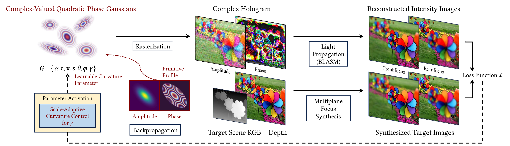
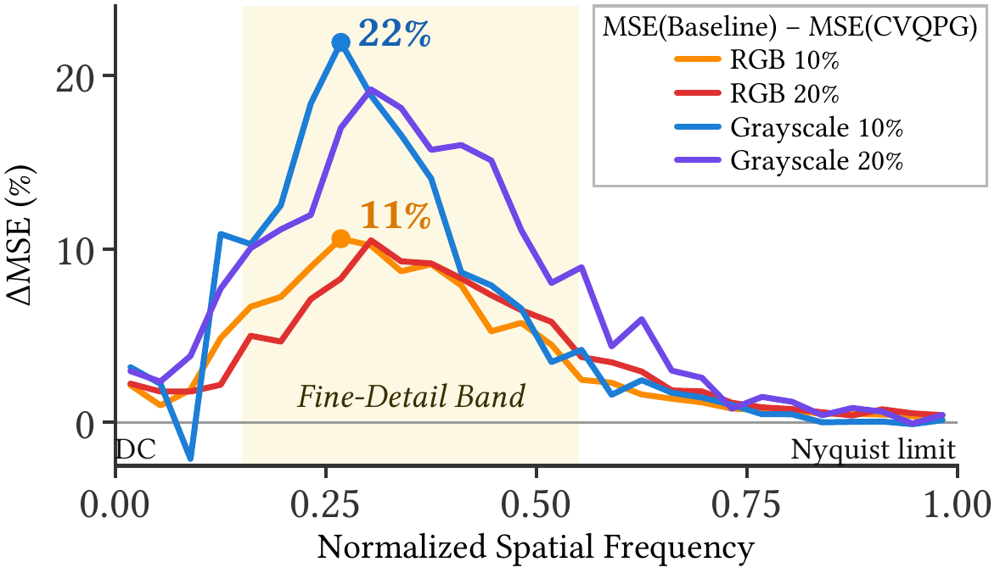
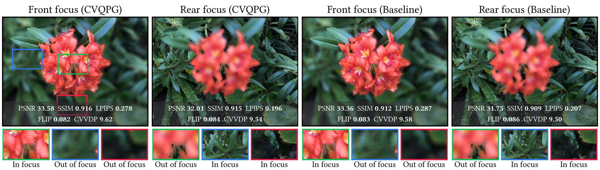
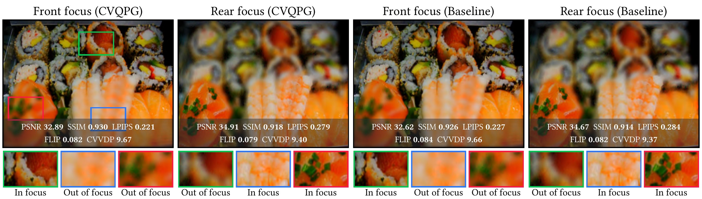
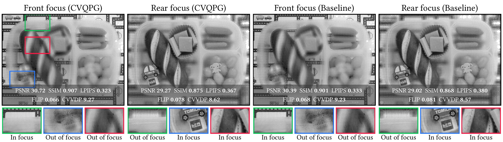
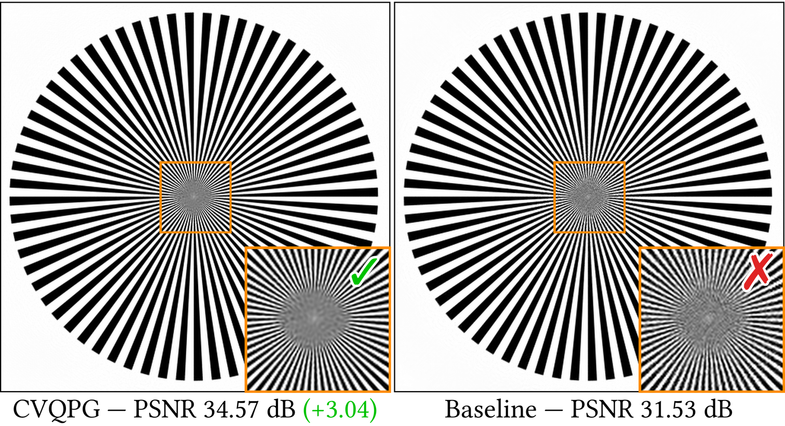
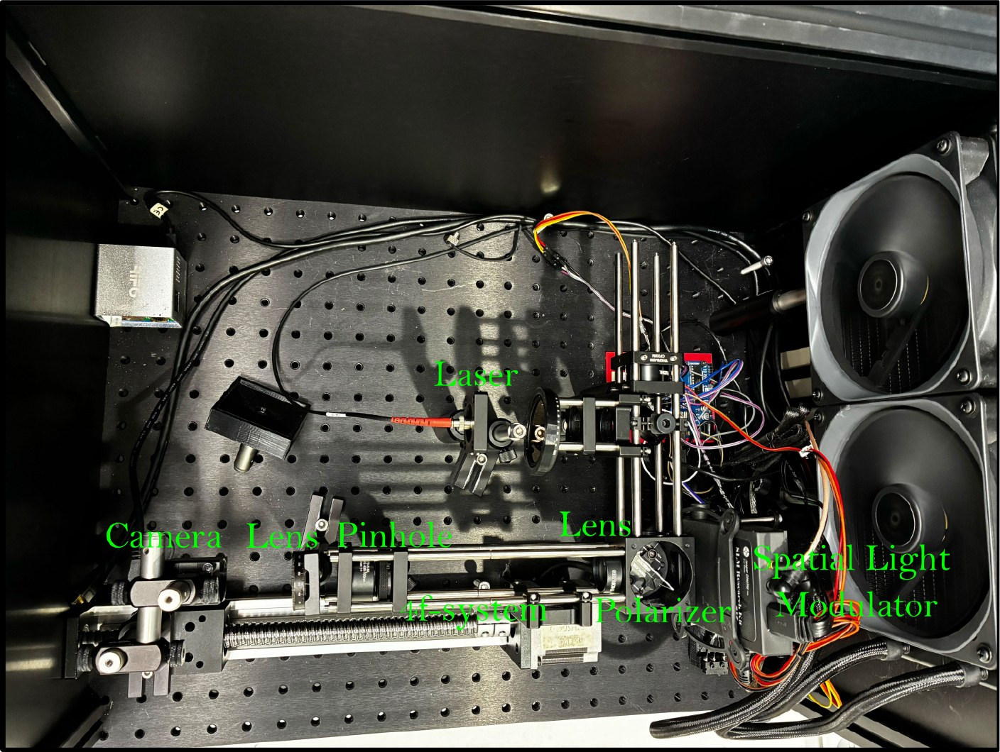
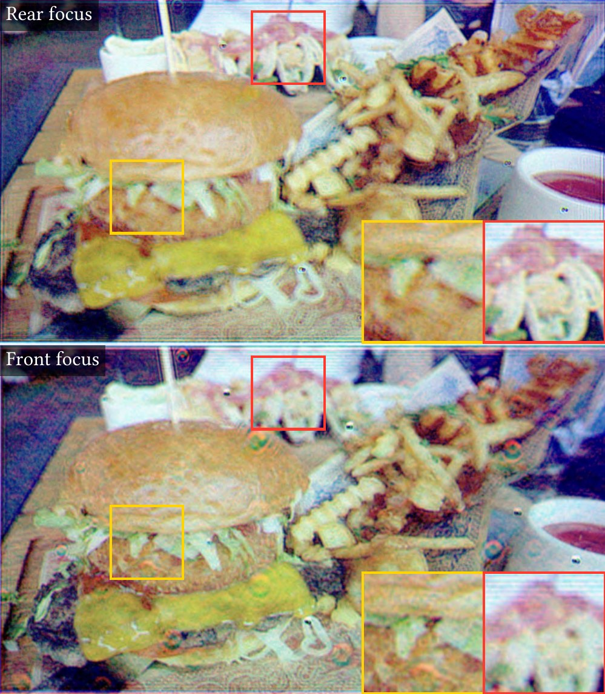

Abstract
We introduce Complex-Valued Quadratic Phase Gaussian (CVQPG), a novel hologram representation method that augments each 2D Gaussian primitive with a quadratic phase profile controlled by a learnable curvature parameter. Against the planar Gaussian baseline, CVQPG improves the average PSNR of holographic reconstructions by 0.19 dB (RGB) and 0.33 dB (grayscale) at equal primitive counts, and by 0.05 dB (RGB) and 0.08 dB (grayscale) at equal parameter counts, where it still leads in all visual quality metrics. Our frequency-domain analysis shows that CVQPG better preserves the mid-to-high frequency band of natural images, where the reconstruction MSE drops by up to 11% (RGB) and 22% (grayscale), indicating that modulating primitive wavefronts is an effective and lightweight enhancement.
Method
Pipeline
A set of 2D Gaussian primitives are rasterized into a complex hologram (amplitude and phase), propagated to several depth planes, and compared with synthesized RGB+D targets at each focus.

Pipeline of CVQPG. We only introduce one extra curvature parameter \(\gamma\) for each primitive.
Complex-Valued Quadratic Phase Gaussian (CVQPG)
Learnable curvature. Each primitive carries a quadratic phase controlled by one curvature parameter \(\gamma = 1/f\):
\[ \begin{gathered} \mathcal{G}(\mathbf{p}) = \alpha\,\mathbf{c}\, \exp\!\big(-\tfrac{1}{2} D^2_{mah}(\mathbf{p})\big)\, \exp(j\boldsymbol{\varphi})\, Q_{mah}(\mathbf{p}), \\[6pt] Q_{mah}(\mathbf{p}) = \exp\!\Big(j\,\frac{k\gamma\det(\mathbf{S})}{2}\, D^2_{mah}(\mathbf{p})\Big). \end{gathered} \]The curvature acts like a virtual lens associated with the planar Gaussian light source: converging for \(\gamma < 0\), planar at \(\gamma = 0\), diverging for \(\gamma > 0\).
Phase of one primitive as \(\gamma\) sweeps.
Side view of the propagated field from a CVQPG primitive.
Mahalanobis QPF. Measuring the phase with the Mahalanobis distance keeps the fringes aligned with the anisotropic envelope.
Standard QPF vs. Mahalanobis QPF as the primitive changes shape.
Curvature Control and Optimization
Scale-adaptive curvature bound. Each primitive's curvature is bounded by the SLM Nyquist limit to avoid aliasing:
\[ \gamma_{\max} = \eta\,\frac{\lambda}{6\sigma\,(\Delta x)^2}, \qquad \eta = 0.9, \]where \(\sigma\) is the equivalent standard deviation, \(\lambda\) is the wavelength, and \(\Delta x\) is the pixel pitch.
Curvature warm-up strategy. \(\gamma\) stays at 0 for the first 400 of 2,000 iterations, then is optimized jointly.
Optimization on the Flower scene (RGB, 15,360 Gaussians).
Results
Quantitative Comparison
CVQPG improves PSNR and visual quality consistently across all settings and metrics, by 0.19 dB (RGB) and 0.33 dB (grayscale) at equal primitive counts, and keeps its lead over Baseline+ at equal parameter counts, showing that wavefront modulation is more effective than adding more planar Gaussians.
| Setting | Method | N | PSNR ↑ | SSIM ↑ | LPIPS ↓ | FLIP ↓ | CVVDP ↑ |
|---|---|---|---|---|---|---|---|
| RGB 20% | Baseline | 30,720 | 29.265 | 0.8307 | 0.2895 | 0.1144 | 9.168 |
| Baseline+ | 33,280 | 29.386 | 0.8336 | 0.2853 | 0.1134 | 9.186 | |
| CVQPG | 30,720 | 29.450 | 0.8364 | 0.2828 | 0.1125 | 9.203 | |
| Δ | +0.185 | +0.0057 | −0.0066 | −0.0019 | +0.035 | ||
| RGB 10% | Baseline | 15,360 | 28.034 | 0.7992 | 0.3292 | 0.1292 | 8.917 |
| Baseline+ | 16,640 | 28.179 | 0.8034 | 0.3241 | 0.1271 | 8.950 | |
| CVQPG | 15,360 | 28.225 | 0.8053 | 0.3217 | 0.1265 | 8.966 | |
| Δ | +0.191 | +0.0060 | −0.0076 | −0.0026 | +0.049 | ||
| Grayscale 20% | Baseline | 15,360 | 29.504 | 0.8340 | 0.3813 | 0.0753 | 8.935 |
| Baseline+ | 17,280 | 29.753 | 0.8394 | 0.3766 | 0.0733 | 8.988 | |
| CVQPG | 15,360 | 29.834 | 0.8443 | 0.3694 | 0.0725 | 9.019 | |
| Δ | +0.331 | +0.0103 | −0.0119 | −0.0028 | +0.085 | ||
| Grayscale 10% | Baseline | 7,680 | 28.076 | 0.7964 | 0.4204 | 0.0888 | 8.548 |
| Baseline+ | 8,640 | 28.317 | 0.8030 | 0.4134 | 0.0862 | 8.621 | |
| CVQPG | 7,680 | 28.398 | 0.8079 | 0.4069 | 0.0850 | 8.658 | |
| Δ | +0.322 | +0.0115 | −0.0135 | −0.0038 | +0.109 |
Averaged over ten scenes and two depth planes. Baseline has the same primitive count N as CVQPG, Baseline+ the same parameter count. Δ: CVQPG over Baseline. CVQPG (bold) is best in every column.
Frequency Analysis
The gain concentrates in the mid-to-high frequency band: up to 11% (RGB) and 22% (grayscale) MSE reduction.

Frequency-resolved \(\Delta\)MSE of CVQPG over the baseline.
Visual Comparison

Flower, RGB 20%

Sushi, RGB 20%

Bento, grayscale 20%

Siemens star comparison (grayscale, single plane)
Holographic Display Prototype
Phase-only holograms encoded from CVQPG (3840 × 2160), captured on our display prototype.

Holographic display prototype.

Captured result, rear (top) and front (bottom) focus.
BibTeX
@inproceedings{wang2026hologram,
author = {Wang, Haolong and Zhan, Yicheng and Ak{\c{s}}it, Kaan and Qiu, Simeng},
title = {Hologram Representation via Quadratic Phase Gaussian Splatting},
booktitle = {SIGGRAPH Asia 2026 Technical Communications (SA Technical Communications '26)},
year = {2026},
month = {December 01--04},
publisher = {Association for Computing Machinery},
location = {Kuala Lumpur, Malaysia},
pages = {4},
isbn = {979-8-4007-2841-9/2026/12},
doi = {10.1145/3829339.3847858},
url = {https://arxiv.org/abs/2609.11434}
}